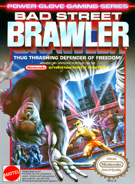
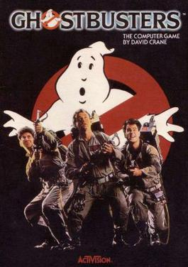
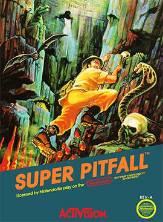
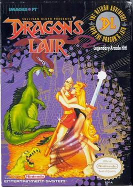
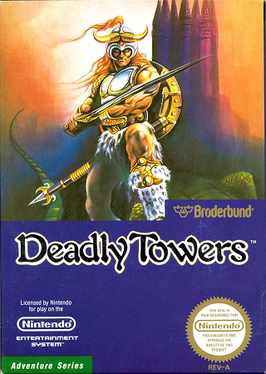
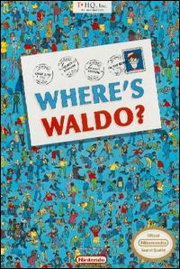
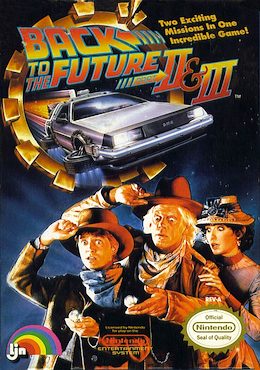
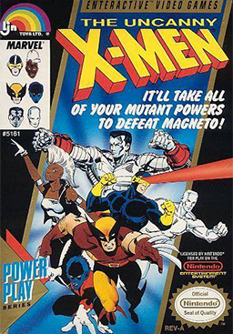
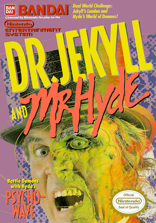
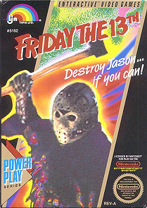

No existe un Metacritic del NES. Contamos en cuantas listas de peores aparece cada juego (Den of Geek, Interesting Engineering, CBR, Seanbaby y las revistas de la epoca), sumamos la nota cuando hay y la leyenda del cartucho. Solo juegos con licencia Nintendo y venta normal.
03
#10
EN 2 LISTAS

NES
TARROVISIONCH 10
NO SIGNAL
Inserta gameplay aqui
BAD STREET BRAWLER
NES · 1989 · MATTEL · DEN OF GEEK + SEANBABY (EGM #16)
▶ PREMIO A LA PELEA DE CALLE CON GUANTE INCLUIDOUn beat 'em up pensado para el Power Glove, el guante del futuro de Mattel. Peleas contra pandilleros, gorilas y artistas de circo, y antes de cada etapa te sueltan una frase motivacional. La vas a necesitar.
04
#9
EN 2 LISTAS

NES
TARROVISIONCH 09
NO SIGNAL
Inserta gameplay aqui
GHOSTBUSTERS
NES · 1988 · ACTIVISION · INTERESTING ENGINEERING + CBR
▶ PREMIO AL CAZAFANTASMAS CON PLANILLA DE GASTOSTe venden cazar fantasmas y te entregan una planilla: administras plata, compras equipo y manejas un auto rigido por un mapa. El gran final es subir un edificio de escaleras identicas apretando botones.
05
#8
EN 2 LISTAS

NES
TARROVISIONCH 08
NO SIGNAL
Inserta gameplay aqui
SUPER PITFALL
NES · 1987 · ACTIVISION · DEN OF GEEK + CBR
▶ PREMIO AL TESORO INVISIBLEPitfall Harry vuelve, pero los tesoros son invisibles: aparecen solo si saltas justo en el lugar correcto y nadie te dice cual es. Es una busqueda del tesoro donde el mapa dice 'salta y reza'.
06
#7
EN 2 LISTAS

NES
TARROVISIONCH 07
NO SIGNAL
Inserta gameplay aqui
DRAGON'S LAIR
NES · 1990 · CSG IMAGESOFT (DEV. MOTIVETIME) · DEN OF GEEK + CBR
▶ PREMIO A LA BARRA DE VIDA DECORATIVAEl arcade de dibujos animados que todos querian jugar, convertido en un plataformas donde caminas como si cargaras el castillo. Tiene barra de vida, pero casi todo te mata de un toque. Mean Machines le puso 21%.
07
#6
EN 2 LISTAS

NES
TARROVISIONCH 06
NO SIGNAL
Inserta gameplay aqui
DEADLY TOWERS
NES · 1987 · BRODERBUND (DEV. LENAR/TAMTEX, IREM) · DEN OF GEEK + CBR
▶ PREMIO AL BEST SELLER ARREPENTIDOTu principe empieza tan debil que lanza una espada a la vez, y hay enemigos que aguantan 8 golpes. Fue el mas vendido de los 4 juegos con que Broderbund debuto en el NES. O sea: alguien pago por esto.
08
#5
EN 3 LISTAS

NES
TARROVISIONCH 05
NO SIGNAL
Inserta gameplay aqui
WHERE'S WALDO?
NES · 1991 · THQ (DEV. BETHESDA SOFTWORKS) · DEN OF GEEK + CBR + SEANBABY (#12)
▶ PREMIO AL MUNDO DE PIXELES DONDE NADIE ENCUENTRA A NADIEBuscar a Waldo, pero con los pixeles de un NES: todo se ve borroso y hay cosas con las mismas rayas. Y en los niveles dificiles Waldo cambia de colores. Game Informer le puso 1 de 10.
09
#4
EN 3 LISTAS

NES
TARROVISIONCH 04
NO SIGNAL
Inserta gameplay aqui
BACK TO THE FUTURE PART II & III
NES · 1990 · LJN (DEV. BEAM SOFTWARE) · DEN OF GEEK + INTERESTING ENGINEERING + CBR
▶ PREMIO AL QUE TE ROBA EL TIEMPODos peliculas en un cartucho, tres epocas y ni una pista de que hay que hacer. No tiene claves ni guardado y es larguisimo: un resenista tardo 6 horas solo en dibujar el mapa.
10
#3
EN 3 LISTAS

NES
TARROVISIONCH 03
NO SIGNAL
Inserta gameplay aqui
THE UNCANNY X-MEN
NES · 1989 · LJN · DEN OF GEEK + CBR + SEANBABY (#3)
▶ PREMIO A LA CAJA SORPRESA MUTANTESeis X-Men jugables y objetos de ayuda que a veces te curan y a veces te explotan, y se ven casi iguales. Seanbaby lo puso tercero entre los peores juegos del NES y AllGame le dio 1 estrella de 5.
11
#2
EN 4 LISTAS

NES
TARROVISIONCH 02
NO SIGNAL
Inserta gameplay aqui
DR. JEKYLL AND MR. HYDE
NES · 1989 · BANDAI (DEV. ADVANCE COMMUNICATION) · DEN OF GEEK + INTERESTING ENGINEERING + CBR + WIKIPEDIA
▶ PREMIO AL CAMINO A LA BODA MAS PELIGROSOSolo quieres llegar a tu boda, pero te tiran bombas y te atacan los perros, y si te estresas te conviertes en Hyde. Una critica dijo que hace todo perfectamente mal. Aparece en 4 listas.
12
#1
EN 4 LISTAS

NES
TARROVISIONCH 01
NO SIGNAL
Inserta gameplay aqui
FRIDAY THE 13TH
NES · 1989 · LJN (DEV. ATLUS) · DEN OF GEEK + EGM 1997 (#8) + NINTENDO POWER 1997 (#6) + GAMEPRO
▶ PREMIO AL JASON EN COLORES PASTELEliges un monitor, recorres un bosque que parece hecho para perderte, con alarmas y Jason por todos lados. Electronic Gaming Monthly lo puso 8 entre los peores de la historia y Nintendo Power, 6. Y la caja es turquesa y morada.
13
ANALISIS DEL TOP
CUANDO LA LICENCIA PESABA MAS QUE EL JUEGO
Los 10 salieron entre 1987 y 1991. Seis son adaptaciones (peliculas, un comic, un libro infantil y una novela) y tres llevan el sello LJN. Un cartucho con un nombre famoso se vendia solo, y se notaba. Deadly Towers fue el mas vendido de su empresa, y eso tambien cuenta.
14
GAME OVER
INSERTA MONEDA PARA CONTINUAR
Coco cierra tocando el tema de Game Over en bateria. ¿Cual fue el peor cartucho del NES que les toco jugar? Cuentanos en los comentarios y cual consola quieren que siga.